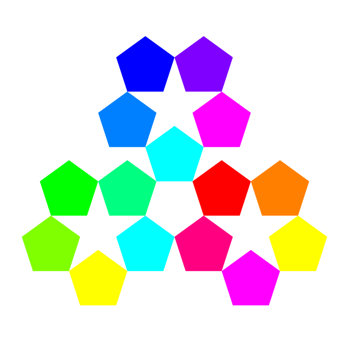

IFACTORY
THE LONG & THE SHORT OF IT
There’s more visual freedom in parallax website design. Rather than focusing on block style information architecture, you can create refreshing and engaging visuals such as animations or beautiful photography, that act as a continuum, ultimately inspiring users to scroll further down the page.
Do you want to tell a story with your product or service? Long-scrolling lends itself well to a narrative and encourages meaningful interaction from users.
Mobiles and tablets have evolved the way we engage in websites. It’s now less about clicking and more about scrolling, swiping and tapping. Long-scrolling websites take away the barrier of complex navigation, providing a responsive, user-friendly experience for mobile users.
Parallax website design is a great solution for us time-poor website browsers, as it forces businesses to convey their message and vision into one dynamic web design page.
These days, scrolling is so simple that it’s become an instinctive action, whereas clicking through to another page requires thought and motivation. A single page website allows user to identify their purpose on the website quicker, than needing to sift through multiple pages.
One of the biggest problems that parallax websites face is that they are not SEO friendly. Why? When you limit the number of pages on your website, Google has fewer pages to index and negatively impacts your standing on the search engine results page (SERP). Luckily there are ways around this.
50% of website users bounce off the page if it hasn’t loaded in 3-5 seconds. So the more high resolution imagery and animations you include, the longer it takes to load the page. When writing this article, we tested some popular parallax websites, and found that the ones with complex visuals took up to 30 seconds to load on a mobile device, whereas simple and minimalist long-scroll websites loaded within a few seconds.
Instead of hitting the “back” button, users must scroll back up the page which can be frustrating for users who want to refer back to a certain element. An easy way around this is to include top navigation and have each element anchored to a category or section.
As one of Brisbane' s leading full service digital and creative agencies, iFactory will help you achieve a digital solution that blends the needs of your business with that of your target audience. Our eclectic mix of digital designers, web developers and digital marketing specialists come together for one purpose – to provide intelligent digital solutions based on your business needs.